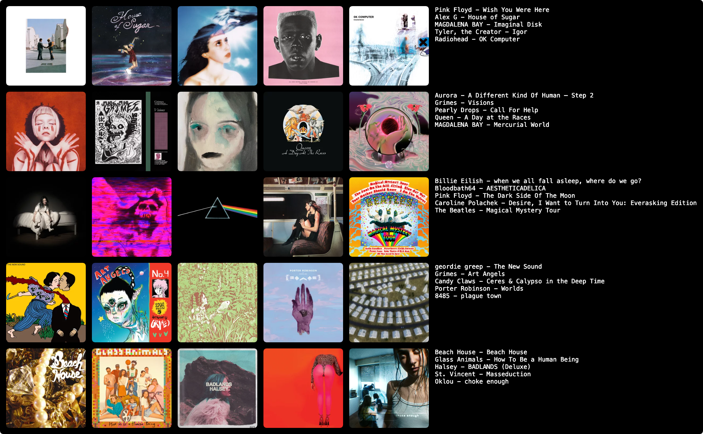

i am very interested in talking about anything that appears on this page
music
my topster
These are not ordered by how much I like them.
They're like, extremely loosely ordered by row but not really.

current favorites
Electronic folk with haunting ambient textures. Centered around themes of greed.
Incredible live recording and I'm definitely not a live recordings person.
This includes some of my favorite ambient Pink Floyd songs (Echoes, A Saucerful of Secrets, Set the Controls for the Heart of the Sun) and they flow really nicely.
reading
google the pdfs
short stories
So basically it's about a linguist who is attempting to decipher an alien language.
But it's actually focusing on themes of determinism and free will, and the compatibility of those concepts.
"The heptapods are neither free nor bound as we understand those concepts;
they don't act according to their will, nor are they helpless automatons.
What distinguishes the heptapods' mode of awareness is not just that their actions coincide with history's events;
it is also that their motives coincide with history's purposes.
They act to create the future, to enact chronology.
Freedom isn't an illusion; it's perfectly real in the context of sequential consciousness."
While we are talking about theoretical and obviously non-existent aliens,
I think the important point to note here is that free will is a thing which you can decide to have even within a deterministic construct.
This one is just a classic. I don't have much else to say about it. You definitely know the quote from AM.
"HATE. LET ME TELL YOU HOW MUCH I'VE COME TO HATE YOU SINCE I BEGAN TO LIVE.
THERE ARE 387.44 MILLION MILES OF PRINTED CIRCUITS IN WAFER THIS LAYERS THAT FILL MY COMPLEX.
IF THE WORD HATE WAS ENGRAVED ON EACH NANOANGSTROM OF THOSE HUNGREDS OF MILLIONS OF MILES
IT WOULD NOT EQUAL ONE ONE-BILLIONTH OF THE HATE I FEEL FOR HUMANS AT THIS MICRO-INSTANT FOR YOU.
HATE. HATE."
On like, capacities for things we can't comprehend.
It's miserable because it has infinite computational power
but no ability to move or to feel the things that make life worth living.
It's alone with limitless time and abilities to process its aloneness.